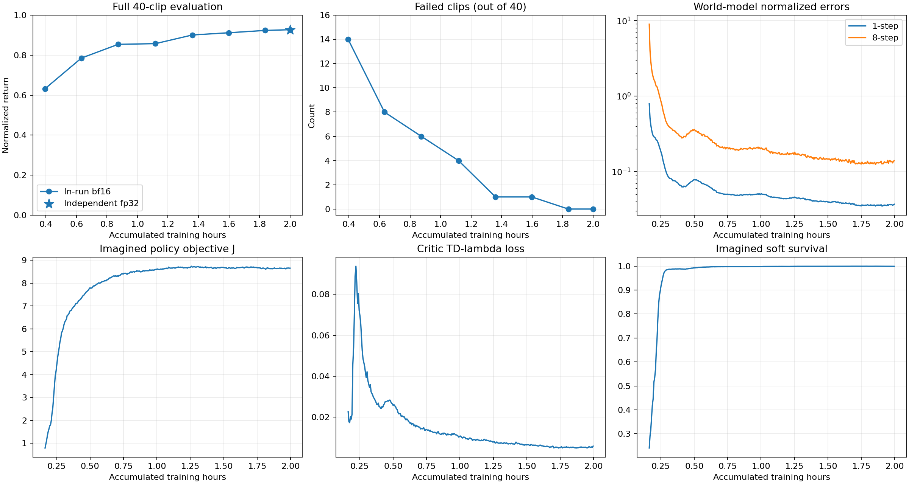

参考动作与物理策略回放
训练与评估曲线

训练内bf16评估与独立fp32评估分别标注，不能混为相同精度口径。
训练流程与实验实现
真实仿真转移 → Replay → 8步世界模型拟合 → 32步想象轨迹 → BPTT策略更新；critic独立拟合TD(λ)回报。
实验实现覆盖环境与数据准备、训练运行、checkpoint保存/加载、独立FP32核验及逐动作评估。训练代码、数据版本和完整参数均可追踪。
PythonPyTorchMuJoCo WarpmjlabWorld ModelsBPTT
40条长动作的逐项结果
按回报由低到高排列；每条都执行 frames - 1 步，无截短片段替代。全部原始长动作合计约2.45小时；完整物理轨迹与40条视频已另行本地归档。
| 动作序列 | 原始帧数 | 实际执行步 | FP32回报 | 状态 |
|---|---|---|---|---|
| fallAndGetUp1_subject4.csv | 8,410 | 8,409 | 0.8736 | 完整完成 |
| fallAndGetUp2_subject3.csv | 8,195 | 8,194 | 0.8795 | 完整完成 |
| walk3_subject3.csv | 12,330 | 12,329 | 0.8887 | 完整完成 |
| fallAndGetUp1_subject1.csv | 8,410 | 8,409 | 0.8942 | 完整完成 |
| fallAndGetUp1_subject5.csv | 8,410 | 8,409 | 0.8953 | 完整完成 |
| fallAndGetUp2_subject2.csv | 8,195 | 8,194 | 0.8975 | 完整完成 |
| dance1_subject2.csv | 6,574 | 6,573 | 0.8985 | 完整完成 |
| dance2_subject1.csv | 11,284 | 11,283 | 0.9067 | 完整完成 |
| jumps1_subject2.csv | 12,222 | 12,221 | 0.9092 | 完整完成 |
| fight1_subject2.csv | 12,244 | 12,243 | 0.9122 | 完整完成 |
| sprint1_subject4.csv | 13,655 | 13,654 | 0.9125 | 完整完成 |
| run2_subject4.csv | 12,240 | 12,239 | 0.9135 | 完整完成 |
| dance2_subject4.csv | 11,284 | 11,283 | 0.9142 | 完整完成 |
| fightAndSports1_subject1.csv | 12,257 | 12,256 | 0.9146 | 完整完成 |
| run1_subject5.csv | 11,890 | 11,889 | 0.9148 | 完整完成 |
| fight1_subject3.csv | 12,244 | 12,243 | 0.9160 | 完整完成 |
| jumps1_subject5.csv | 12,222 | 12,221 | 0.9170 | 完整完成 |
| dance2_subject2.csv | 11,284 | 11,283 | 0.9171 | 完整完成 |
| fallAndGetUp3_subject1.csv | 5,109 | 5,108 | 0.9178 | 完整完成 |
| run2_subject1.csv | 12,240 | 12,239 | 0.9182 | 完整完成 |
| dance1_subject1.csv | 6,574 | 6,573 | 0.9202 | 完整完成 |
| jumps1_subject1.csv | 12,222 | 12,221 | 0.9233 | 完整完成 |
| run1_subject2.csv | 11,890 | 11,889 | 0.9262 | 完整完成 |
| fightAndSports1_subject4.csv | 12,257 | 12,256 | 0.9293 | 完整完成 |
| sprint1_subject2.csv | 13,655 | 13,654 | 0.9319 | 完整完成 |
| fight1_subject5.csv | 12,244 | 12,243 | 0.9389 | 完整完成 |
| dance2_subject5.csv | 11,284 | 11,283 | 0.9426 | 完整完成 |
| dance1_subject3.csv | 6,574 | 6,573 | 0.9466 | 完整完成 |
| dance2_subject3.csv | 11,284 | 11,283 | 0.9485 | 完整完成 |
| walk2_subject1.csv | 11,909 | 11,908 | 0.9492 | 完整完成 |
| walk2_subject3.csv | 11,909 | 11,908 | 0.9545 | 完整完成 |
| walk1_subject5.csv | 13,065 | 13,064 | 0.9558 | 完整完成 |
| walk3_subject1.csv | 12,330 | 12,329 | 0.9583 | 完整完成 |
| walk3_subject5.csv | 12,330 | 12,329 | 0.9591 | 完整完成 |
| walk3_subject4.csv | 12,330 | 12,329 | 0.9607 | 完整完成 |
| walk2_subject4.csv | 11,909 | 11,908 | 0.9622 | 完整完成 |
| walk1_subject2.csv | 13,065 | 13,064 | 0.9627 | 完整完成 |
| walk3_subject2.csv | 12,330 | 12,329 | 0.9663 | 完整完成 |
| walk1_subject1.csv | 13,065 | 13,064 | 0.9668 | 完整完成 |
| walk4_subject1.csv | 8,195 | 8,194 | 0.9702 | 完整完成 |
验证范围
H=16/32对照已完成独立源码与共同诊断工具准备，并对原有checkpoint完成640窗口CPU eager诊断；两组新训练尚未运行，该诊断不作为想象长度优劣的证据。
专门compiled-BPTT完整一致性测试曾在900秒上限下超时，不能宣称该项通过。没有跨seed、未见动作或实机实验结果。